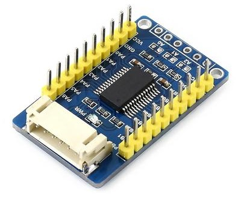
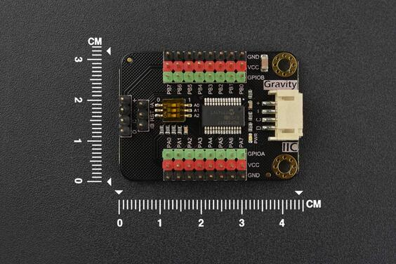
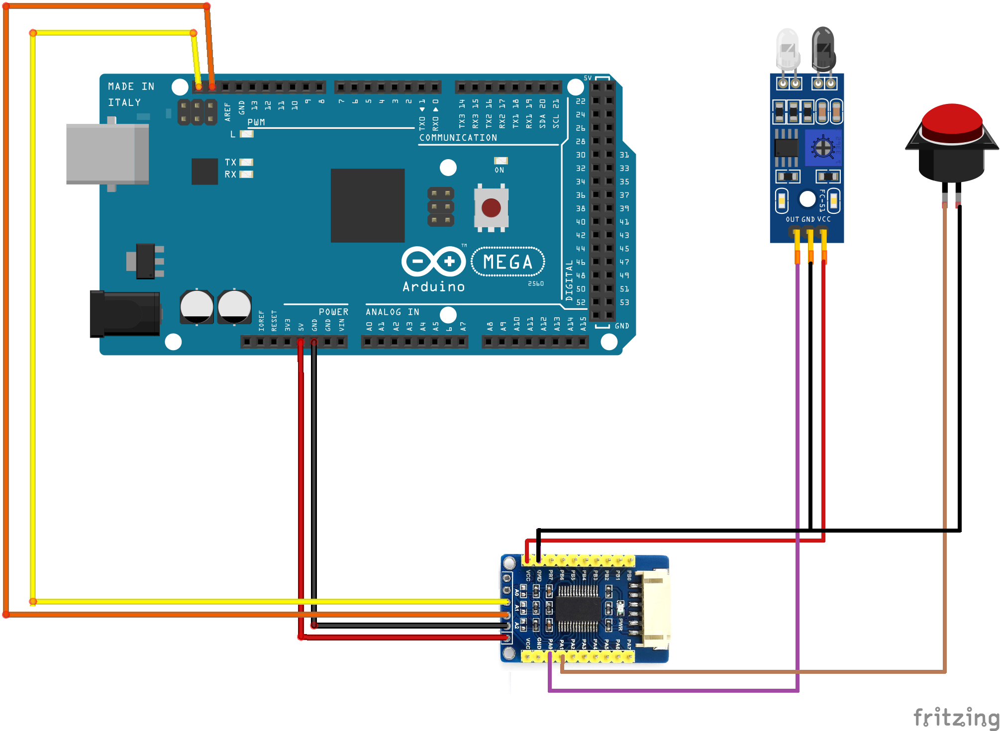
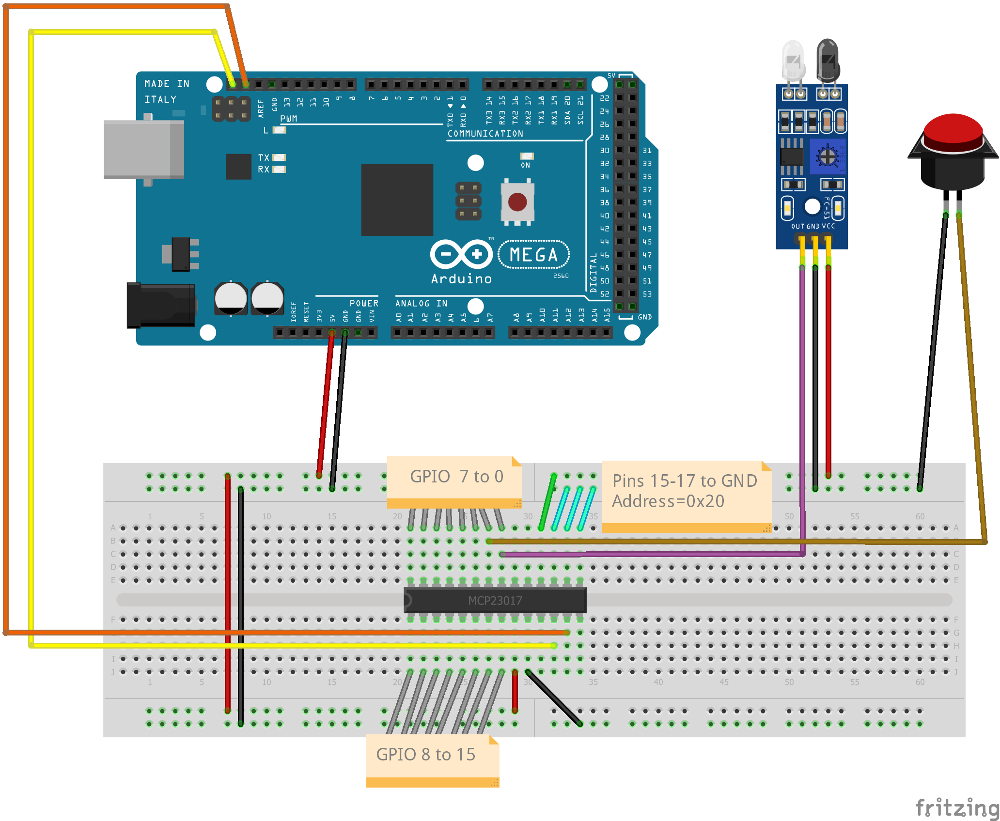

I2C GPIO Expander Modules¶
GPIO Expander modules, as the name implies, expand the number of General Purpose Input/Output pins that you can use for interacting with your railway layout components.
GPIO pins, in input mode, can be connected to sensors (such as Block Occupancy Detectors, Hall Effect magnetic sensors, Infra-Red sensors, microswitches and many more) or to switches, or many other things. The pins sense the digital state (on or off) of the sensor or switch. Typically, when a sensor is ON or ACTIVE it connects its output pin to the GROUND or 0V pin. Some sensors may connect the output to +5V when ACTIVE, so be sure which type of sensor you have.
When used in output mode, the GPIO pin may be connected (via a current-limiting resistor) to an LED indicator, or, via a suitable power driver, to a motor or solenoid.
A GPIO Expander module typically has 8 or 16 pins that can each be used as an input or output. When you reference a pin, it will be configured in the appropriate mode. So if you use the EX-RAIL SET(pin) call, the pin will be configured as an output; but if you use the EX-RAIL AT(pin) call, the pin will be configured as an input. If you associate the pin with a DCC++EX ‘Sensor’ object (through the <S …> commands), then it will be configured as an input.
A typical GPIO Expander, for which DCC++EX is pre-configured, is the MCP23017. An example board (from PiHut) is shown here.
{kind=link}
It has a Grove connector on the bottom-left side, for which a compatible converter cable is provided. It also has five connector pads on the top-right side, to which pins or wires may be soldered. Along the top-left and bottom-right edges are the sixteen GPIO pins, and two Vcc and two GND pins.
Here is another module, from DFRobot:
{kind=link}
This module has a row of three pin headers associated with each I/O pin; this allows each sensor to have its own GND, VCC and signal pin connection, so we can use three-way ribbon connectors for each sensor or output. At the far left of the board are the I2C connector pins; there is also what appears to be a Grove connector at the right side of the board.
An example of circuit connections for a module is shown below:
{kind=link}
This diagram also shows an infra-red sensor (3-pin device) connected to GPIO0 of the MCP23017, and a push-button (2-pin) connected to GPIO1.
Also generally available is the MCP23017 in IC form (28-pin DIL package). This can be mounted on a breadboard for use, as shown below, or on stripboard if you want a more permanent solution.
{kind=link}
Pins 15-17 of the MCP23017 allow selection of the I2C address. If all three pins are connected to ground (as shown in the diagram with cyan wires) then the address will be 0x20. In DCC++EX, the sixteen GPIO pins on MCP23017 address 0x20 are accessed using pin numbers 164 to 179, so to associate a sensor object with the switch we would use a command in the form <S 165 165 1> (the final ‘1’ means enable pull-up for the sensor, so that the pin will normally be at HIGH level). Now, when the switch is pressed, the input pin is switched to LOW level and a message <Q 165> is generated by DCC++EX to indicate that the pin is active. When the switch is released, the input pin is pulled back to HIGH and a message <q 165> is generated to indicate that the pin is inactive.
Interrupts¶
Many I2C GPIO Expander boards provide pin connections labelled INT, INTA, INTB etc. These are used by the expander chip to notify the microcontroller that one or more inputs have changed state.
DCC++EX supports the use of these pins. On controllers with INTA and INTB, the two pins should be connected together to make a common INT signal.
The INT signal may be connected to an input pin of the Arduino. The INT signals from multiple modules may be connected to one pin, or you may connect the INT signal for each module to a different Arduino pin. In either case, the Arduino pin number is specified when you configure the module in the mySetup.cpp file.
Once configured and connected, the GPIO Expander driver will not poll the GPIO module to obtain the input states unless the INT/INTA/INTB signal is active (LOW); so when no inputs are changing, the device will not be accessed.
Note The pre-configured MCP23017 modules do not have interrupt mode enabled, so are polled on a cyclic basis.